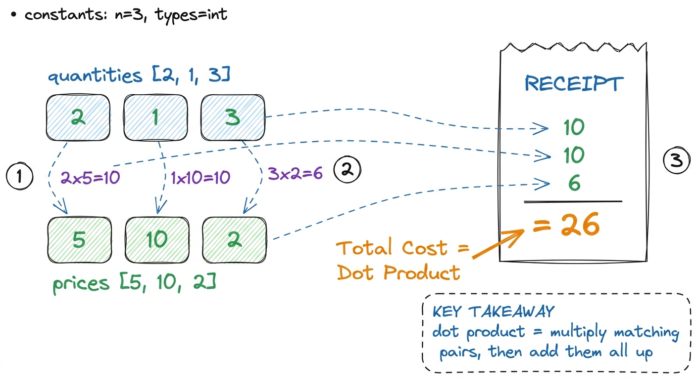
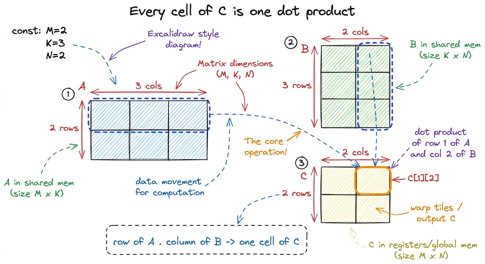
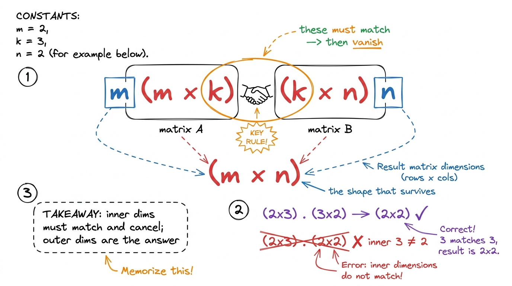
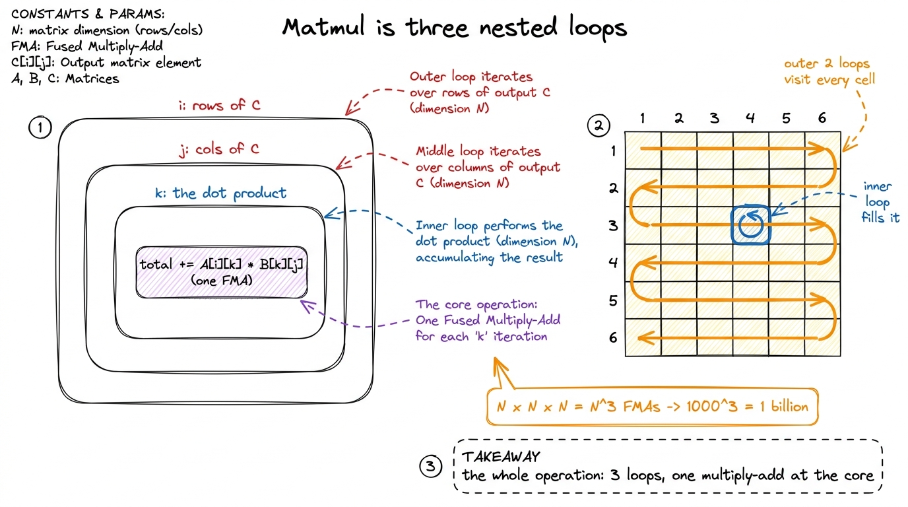

Matrix multiplication, from the absolute beginning
By the end of this chapter you will be able to stand at a whiteboard and teach matrix multiplication so clearly that a student who has never seen it will not only compute it, but feel why it is the single most important operation in all of modern AI. We start from nothing. No GPUs yet. Just numbers, a pencil, and a story.
Everything in this workshop — every kernel we optimize, every trick with memory and threads — exists to make this one operation fast. So you have to own it completely. Let's build it up the way you'll build it up for students: slowly, with pictures, until it feels obvious.
Start even smaller than a matrix: the dot product
Before matrices, there is the dot product. Take two lists of numbers of the same length. Multiply them position by position, then add up all the products. That single number is the dot product.
[2, 1, 3] · [5, 10, 2] = (2·5) + (1·10) + (3·2) = 10 + 10 + 6 = 26. Write each product under its pair, then sum. Three multiplies, two adds. That is the whole operation.
figure rendering · The dot product, taught as a shopping receipt: pair, multiply, total.Hold onto that word — dot product — because a matrix multiplication is nothing more than a big, organized grid of dot products. That is the whole secret. Once students believe that, everything else is bookkeeping.
A matrix is just a table of numbers
A matrix is a rectangle of numbers arranged in rows and columns. That's it. A 2-by-3 matrix has 2 rows and 3 columns. We say its shape is 2×3.
In an AI model, these grids are everywhere. The numbers coming into a layer are a matrix (one row per word, say). The weights the model learned are a matrix. To push the data through the layer, you multiply them. So "running a neural network" is, almost entirely, "multiplying matrices." We'll make that concrete in the next chapter; for now, just plant the flag: matrices are the nouns, and multiplication is the verb.
Multiplying two matrices: the grid of dot products
Here is the rule, and here is how to teach it without anyone getting lost.
To multiply matrix A by matrix B and get matrix C, every cell of the answer C is one dot product: the dot product of a row of A with a column of B. The cell in row i, column j of C is the dot product of row i of A with column j of B.

figure rendering · The matmul layout students should memorize: a row of A meets a columnNow do a full 2×2 times 2×2 on the board. Small enough to finish, big enough to show the pattern.
A = [ 1 2 ] B = [ 5 6 ]
[ 3 4 ] [ 7 8 ]Fill C one cell at a time, saying the receipt each time:
C[1][1]= row 1 of A · column 1 of B = (1·5) + (2·7) = 5 + 14 = 19C[1][2]= row 1 of A · column 2 of B = (1·6) + (2·8) = 6 + 16 = 22C[2][1]= row 2 of A · column 1 of B = (3·5) + (4·7) = 15 + 28 = 43C[2][2]= row 2 of A · column 2 of B = (3·6) + (4·8) = 18 + 32 = 50
C = [ 19 22 ]
[ 43 50 ]The shape rule, and why it exists
There is exactly one rule about when you're allowed to multiply: the number of columns in A must equal the number of rows in B. A (m × k) times a (k × n) gives an (m × n) result. The two inner numbers — the k — must match and then vanish; the two outer numbers survive as the answer's shape.

figure rendering · The shape rule as a handshake: inner dimensions must match and cancel;Now write it as a program — three nested loops
Here is the beautiful part you'll show right after the hand example: the entire operation is three nested loops. Once students see the loops, they see the cost, and the cost is the reason this whole workshop exists.
# C = A @ B, A is (M x K), B is (K x N), C is (M x N)
for i in range(M): # which row of C
for j in range(N): # which column of C
total = 0
for k in range(K): # the dot product (the "receipt")
total += A[i][k] * B[k][j]
C[i][j] = totalThe outer two loops walk over every cell of the answer. The inner loop is our receipt — the dot product. Three loops, and inside the deepest one, a single multiply-and-add (in hardware this fused step is called an FMA, a fused multiply-add).
N × N matrices, the loops run N × N × N = N³ times. Multiply two 1000×1000 matrices and that is one billion multiply-adds — for what looks like a tiny operation. Now say the punchline: "A real model does matrices far bigger than this, millions of times, for every word it generates. That is why we spend four weeks making this one operation fast." This number is the emotional hook of the entire course.
figure rendering · The whole operation in one picture: three loops, a billion multiply-adWhy this is the whole game (the production link)
Plant this now, even before the next chapter drives it home. When you send a message to ChatGPT, DeepSeek, or a Llama model, the machine turns your words into numbers, then pushes them through hundreds of layers. Almost every one of those layers is a matrix multiply — your data-matrix times a learned-weight-matrix. Generating a single word can take trillions of these multiply-adds; a full conversation, far more.
That's the frame to leave them with at the end of this first piece: matrix multiplication is small enough to do by hand on a receipt, and important enough that the entire AI economy is built on doing it quickly. Everything else we teach is in service of that second half.
You can now teach
- The dot product as a shopping receipt — pair, multiply, total — and why it's the atom of everything that follows.
- A matrix as a labeled grid, and the strict "rows by columns" convention.
- Matrix multiply as a grid of dot products (row of A meets column of B), demonstrated with a full 2×2 by hand.
- The shape rule as a handshake: inner dimensions match and cancel, outer dimensions survive.
- Matmul as three nested loops with an FMA at the core, and the
N³cost that makes 1000×1000 a billion operations. - The production hook: this exact loop is where the AI economy spends its money — which is why the whole workshop exists.